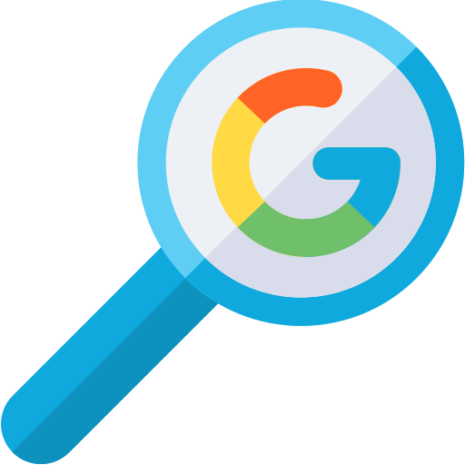
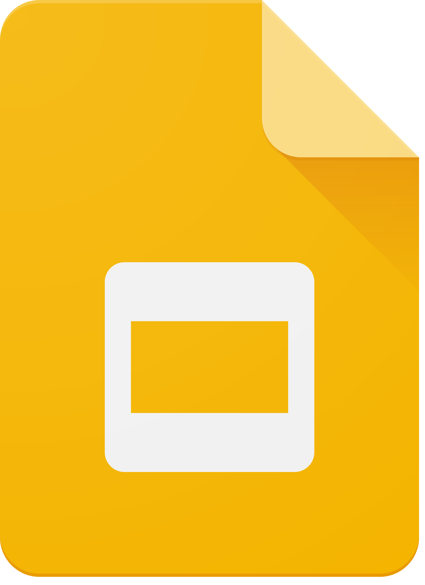
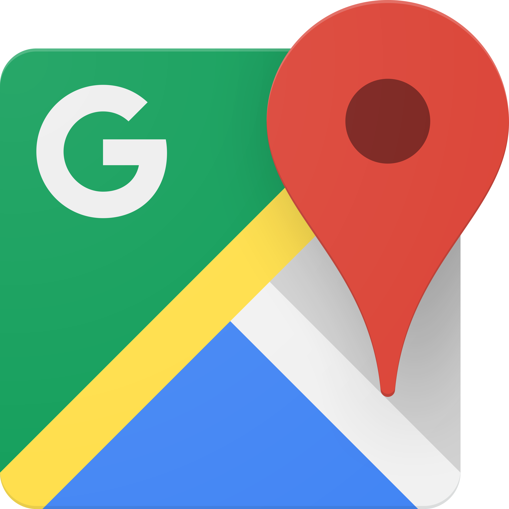
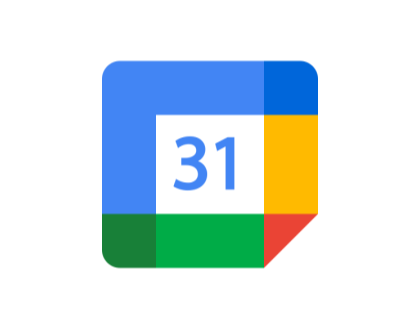

Основні додатки Google
- Google Search

- Пошукова система, що належить компанії Google LLC. Вона використовує автоматизовані алгоритми для сканування, індексування та впорядкування мільярдів вебсторінок, щоб надавати найрелевантніші результати за запитами користувачів, обробляючи запити через пошукових роботів
- Gmail

- Безкоштовна служба електронної пошти від компанії Google, що забезпечує швидкий та безпечний обмін повідомленнями через веб-інтерфейс, мобільні додатки (Android/iOS) та протоколи IMAP/POP3.
- Google Drive
.svg.png)
- Безкоштовний хмарний сервіс від компанії Google, який дозволяє зберігати файли, отримувати до них доступ із будь-яких пристроїв (комп'ютерів, смартфонів, планшетів) та працювати з ними спільно.
- Google Docs

- Безкоштовний хмарний текстовий редактор від Google, що дозволяє створювати, редагувати та спільно працювати над документами в режимі реального часу
- Google Sheets
- Безкоштовний хмарний сервіс від компанії Google для створення, редагування та аналізу електронних таблиць.
- Google Slides

- Безкоштовний хмарний сервіс від компанії Google для створення, редагування та спільної роботи над презентаціями в режимі онлайн.
- Google Maps

- Безкоштовний картографічний вебсервіс і застосунок від Google, що надає детальні супутникові знімки, мапи вулиць, панорами 360°, інформацію про затори в реальному часі, покрокову навігацію та пошук місцевих компаній.
- YouTube

- Провідний світовий відеохостинг та соціальна мережа, яка дозволяє безкоштовно завантажувати, переглядати, оцінювати та коментувати відео.
- Google Meet
- Безкоштовний сервіс відео- та аудіозв'язку від Google, призначений для онлайн-зустрічей, навчання, вебінарів та бізнес-конференцій.
- Google Calendar

- Безкоштовний хмарний сервіс від Google для планування часу, зустрічей та справ, доступний як вебверсія та додаток для Android/iOS.